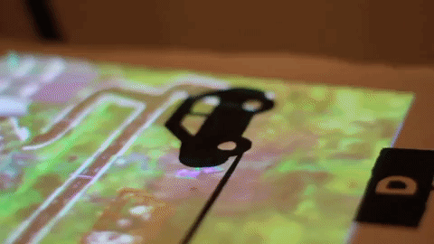
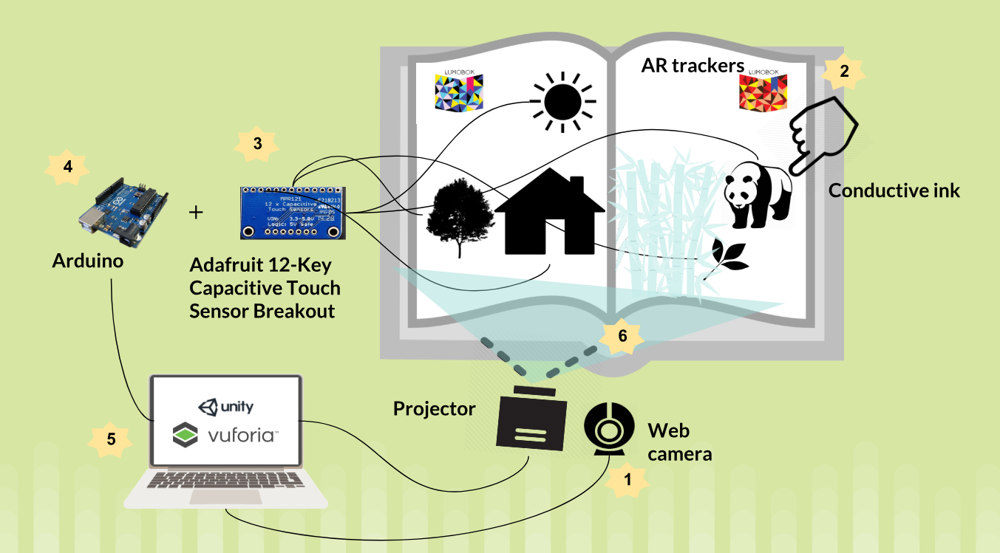

Lumobok
An interactive augmented book meant to create collaborative, playful and meaningful interaction.
Role
- Front-end designer and developer in Unity
- Physical prototyping
- AR tracking with Vuforia
- Multiplayer quiz developer

This project aims to redefine the concept of the book, by enhancing its familiar experience with projected visuals, touch interactions and sound feedback, while maintaining the physical properties that a screen can’t provide, such as the feeling of touching and turning the pages.
Lumobok was designed with flexibility of its content in mind, and the produced prototype includes six pages of dynamic content with the theme of environmental sustainability. The content of the book hasn't been chosen randomly. With the ever growing need of bringing awareness and engaging people in sustainability-related issues, we found this project the best opportunity to familiarize many with these issues and show them in a playful way how much impact each of us has on our environment.


“We like to imagine that one day we’ll have a library full of Lumoboks where each book has unique games and stories created by anyone.”

Signals from analog triggers of conductive ink were connected to copper tape and subsequently digitized in a microcontroller to generate visual and audio content. From within Unity, content creation, marker tracking and projection took place. The six pages of content include an introductory cover, a multiple choice quiz, a multiplayer game and a lifestyle quiz with corresponding responsive landscape.
By projecting visual content and by digitizing analog triggers on a shared space, users are offered a more casual and collaborative approach to interaction than by conventional individual on-screen experiences. This is the core of the Lumobok concept. A connection between the long-standing unimodal interaction that the book offers was meant to be established with emerging technologies to thus create an exciting multimodal fusion. The possibility of playful collaboration, which is an unusual interaction for a book, adds another level of engagement and meaningfulness to the interaction. The familiarity of the book brings tacit expectations of how to approach the object, but it has turned on its head thanks to the uncommon ways of interaction. By adding digital, tangible and sound properties to the object, we enhance the interaction with it and add experiences that are not possible with just the object’s physical properties.
This project was designed and developed by Patricia Ciobanu, Andreas Almqvist, Nadia Campo Woytuk and Sonia Camacho. It received a nomination in Creative Technical Application by the C AWARDS in 2018.